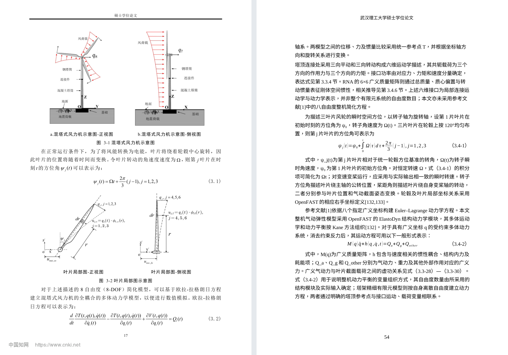

原文与修订后的真实PDF页面

本页逐项对比
| 图3-1：混塔整机正视与侧视、塔顶自由度 | 我方已有158 m混塔、RNA及OpenFAST不同模型层级；研究对象与八自由度简化模型不同。 |
|---|---|
| 图3-2：叶片局部模型、法向与侧向弯曲 | 我方3.3节已有叶片气动坐标与气动力的虚功表示；各模型的柔性自由度由实际结构输入决定。 |
| 式（3.1）：三个叶片的旋转方位角 | 补写式（3.4-1），采用变转速积分与120°相位差，恒定转速为其特例。 |
| 式（3.2）：8自由度Euler–Lagrange方程 | 补写一般动力平衡式（3.4-2）；实际整机采用Kane方法的ElastoDyn，而非参考论文的八自由度运动方程。 |
正式论文3.4.1节新增学术正文
为描述三叶片风轮的瞬时空间方位，以转子轴为旋转轴，设第1片叶片在初始时刻的方位角为ψ₀，转子角速度为Ω(t)。三片叶片在轮毂上按120°均匀布置，则第j片叶片的方位角可表示为
\psi_j(t)=\psi_0+\int_{0}^{t}\Omega(\tau)\,\mathrm d\tau+\frac{2\pi}{3}(j-1),\qquad j=1,2,3
式中，ψ_j(t)为第j片叶片相对于统一轮毂方位基准的转角，Ω(t)为转子瞬时角速度，ψ₀为第1片叶片的初始方位角。对恒定转速Ω，式（3.4-1）的积分项可简化为Ωt；对变速变桨运行，应采用与实际输出相一致的瞬时转速。转子方位角描述叶片绕主轴的公转位置，桨距角则描述叶片绕自身变桨轴的转动，二者分别参与叶片位置和气动截面姿态变换。轮毂及叶片局部坐标关系采用OpenFAST的相应右手坐标定义[132,133]。
参考文献[1]依据八个指定广义坐标构建Euler–Lagrange动力学方程。本文整机气动弹性模型采用OpenFAST的ElastoDyn结构动力学模块，其多体运动学和动力平衡按Kane方法组织[132]。对于具有广义坐标q的受约束多体动力系统，消去约束反力后，其运动方程可用以下一般形式表示：
\mathbf M(\mathbf q)\ddot{\mathbf q}+\mathbf h(\mathbf q,\dot{\mathbf q},t)=\mathbf Q_{\mathrm a}+\mathbf Q_{\mathrm g}+\mathbf Q_{\mathrm{other}}
式中，M(q)为广义质量矩阵，h包含与速度相关的惯性耦合、结构内力及耗能项；Q_a、Q_g和Q_other分别为气动力、重力及其他外部作用对应的广义力。广义气动力与叶片截面载荷之间的虚功关系见式（3.3-28）—（3.3-30）。式（3.4-2）用于说明整机动力平衡的变量组织方式，其自由度数量由所采用的结构模块及实际输入确定；塔架精细有限元模型则按自身离散自由度建立动力方程，两者通过明确的塔顶参考点与接口运动、载荷变量相联系。
理论来源：[132] OpenFAST ElastoDyn官方手册；[133] OpenFAST AeroDyn坐标系文档。